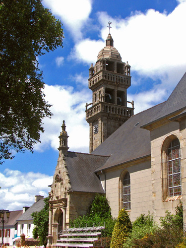
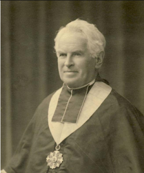
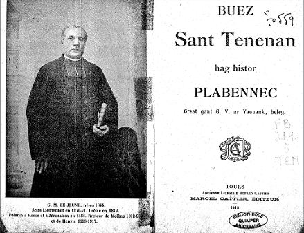
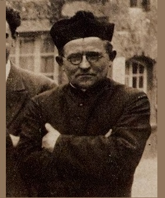

Tostait amañ, Plabennegiz!
Apprenez, Gens de Plabennec...
People of Plabennec, come nigh!
Enlèvement du recteur Jestin, le 23 février 1791
|
A propos de la mélodie Selon l'indication du MS de Penguern, cette pièce se chante: "War ton gwerz Katell gollet" (Sur l'air de "Catherine, la fille perdue") C'est cet air qui sert de fond sonore à la présente page. Presque toutes les sources citées ci-après portent la même indication de timbre, sauf celle du recteur Le Jeune qui porte la mention "Ton: Petra zo nevez e Kear Is" A propos du texte - recueilli par Jean-Marie de Penguern (1807 - 1856), dans le manuscrit coté N.90 à la Bibliothèque Nationale : "Chants populaires de Trégor", folios 135v-142v, chant N° 161, intitulé "Cantic var ton guers Catel gollet". - trancrit par le Pr. Pierre Le Roux dans les " Annales de Bretagne [et des Pays de LOuest], 1886-[en cours]", pour les années 1908-1909, Tome 24, p. 170-185; - transcrit par Joseph Ollivier ( Ms 975, p. 297-303, chant n° 161) - publié par Dastum dans "Dastumad Penwern" en 1983, page 61-64. - conservée sous forme manuscrite dans la bibliothèque de Daniel-Louis Miorcetc de Kerdanet (1792 - 1874) à Lesneven (29), intitulée "Quimiat persoun Plabennec". Elle fut - publiée par le chanoine Henri Pérennès (après lui avoir été communiquée par le très controversé Abbé Jean-Marie Perrot, 1877-1943) dans son recueil " Poésies et chansons populaires bretonnes concernant des événements politiques et religieux de la Révolution française", 1937, Tome I, p. 164-183, puis - dans la revue "Annales de Bretagne [et des Pays de LOuest], 1886-[en cours], en 1953, Tome 42, p. 100-119 - a été recueillié par Gabriel Milin avant 1895 sous le titre "Ann Aotrou Jestin, persoun Ploabennek" (M. Jestin, recteur de Plabennec) et figure dans ses manuscrits (Ms [10], Mvg 104, p. 2, chant n° [61]), puis - publiée dans Gwerin 1961-1967 par Fañch Elies-Abeozen et le Père Louis Le Floc'h. Est-ce à dire que ces trois pièces ont été composées par l'Abbé Le Borgne comme cela est dit 2 fois en bas de page ("Compositions de M. Le Borgne contre la Révolution.")? Dans le manuscrit De Penguern, on lit à la suite du chant d'inspiration similaire, "Ar veleien divroet", "Les prêtres exilés": "Fait par M. Le Borgne, vicaire de Cléder. Copié sur un manuscrit appartenant à son neveu Pierre Le Borgne". Que l'Abbé Le Borgne ait aussi composé les deux autres chants est seulement une hypothèse. |
 Mélodie Selon l'indication du manuscrit de Penguern: "War ton gwerz "Katell Gollet" (Sur l'air de "Catherine Perdue") Kanaouennou Breiz-Vihan (Mélodies d'Armorique), par H. Laterre (Bodlan) et F. Gourvil (Barr-Ilio), publié en 1911 Arrangement par Christian Souchon (c) 2009  |
About the melody As stated in Penguern's manuscripts, this piece is sung: "War ton gwerz Katell gollet" (To the tune of "Catherine, the lost girl") It is the melody used as a sound background for the present page. Almost all the sources quoted direct us to sing these verses to said tune except Vicar Le Jeune's version which bears the mention "Ton: Petra zo nevez e Kear Is". About the text - recorded by Jean-Marie de Penguern (1807 - 1856), in his MS numbered N.90 kept at the National Library, also known as "Chants populaires de Trégor", folios 135v-142v, song N ° 161, titled "Cantic var ton guers Catel gollet". - published by Prof. Pierre Le Roux in "Annales de Bretagne [et des Pays de LOuest], 1886- [in progress]", for the years 1908-1909, Tome 24, p. 170-185; - transcribed by Joseph Ollivier (Ms 975, p. 297-303, song n° 161) - re-published by Dastum in "Dastumad Penwern" in 1983, page 61-64. - recorded in handwritten form in the private library of Daniel-Louis Miorcetc de Kerdanet (1792 - 1874) at Lesneven (29), entitled "Quimiat persoun Plabennec". It was - published by Canon Henri Pérennès (who had it sent in by the famous Abbé Jean-Marie Perrot, 1877-1943) in his collection "Breton poems and popular songs about political and religious events of the French Revolution", 1937, Volume I, p. 164-183, then - in the review "Annales de Bretagne [et des Pays de LOuest], 1886- [still in progress], in 1953, Tome 42, p. 100-119 - was collected by Gabriel Milin before 1895 under the title "Ann Aotrou Jestin, persoun Ploabennek" (M. Jestin, vicar of Plabennec) and appears in his manuscripts (Ms [10], Mvg 104, p. 2, song no. [61]), then - published in the review "Gwerin" 1961-1967 by Fañch Elies-Abeozen and Father Louis Le Floc'h. However we should not infer that these three pieces were composed by Abbé Le Borgne as stated twice at the bottom of the page ("Compositions de M. Le Borgne contre la Révolution.")? In the De Penguern manuscript, following a similar song, we read "Ar veleien divroet" , "The exiled priests": "Made by M. Le Borgne , vicar of Cléder. Copied from a manuscript belonging to his nephew Pierre Le Borgne". Thus that Abbé Le Borgne also composed the other two songs is only a possible, albeit plausible, hypothesis. |
|
KANTIK (Stumm Penwern) 1. Tostaït amañ Plabennegiz, Klevit ar cheloù meurbed trist: En nos eo laeret ho person Gant tud kruel ha direzon. 2. En trede war-nugent a vis Chwevrer Eo bet kemeret ho pastor Gant ur vandenn tud anrajet Kluboù an Ifern dirollet. 3. Kriz vije r galon na ouelje E prisbital neb a vije O klevoud ar chri hag ar gouelvan. Dirollet eo ar bleizi war an oan. 4. O va Doue, pebezh glachar! Kemeret evit kriminal Abalamour men-deveus prezeget Aviel Jezuz de aoditored. 5. Dan hanter-nos nevez-sonet Er prispital ez-int antreet, Skoet o-deus an holl dorioù En noaz ganto edo o armoù. 6. Skeiñ a raent kreñv war an nor: A-berzh ar Roue o choulenn digor, Hag hastit buan, na dardit ket Rak bezañ hon-eus afer breset! 7. Ar plach phe-deveus o chlevet Gant spont he-deveus goulennet Piv zo aze dar poent-mañ n nos. « Emaomp dija pell-zo o repoz ! » 8. An diranted a oa preset : Evel ma oant espiounet A barlante rust ha chwerv: Ma na zigorit, ni a dorro! 9. « An Aotroù Jestin a glaskomp Parlant gantañ prest a rankomp. Bezañ o-neus gantañ afer breset Da Zant Paol Leon e rank doned. 10. Ar plach dan nech prest a zavas En ur ouelañ a lavaras: « Aotroù, savit, deuit alese Mar gellit, saveteit ho puhez ! 11. Ez-eus deuet bourchizien Ha gallek ne parlantont ken. Krediñ a ran, a feiz parfet, Nint deuet nemed dho kemered. » 12. « Sesit Marcharit da ouelañ. Erruout a dlee kement-mañ. Nam-eus ket repozet hed an nos: Edon pell-zo outo 'gortoz. 13. Diskenn a reas buan dan nor Do saludiñ gant peb enor, Gant joa en-deus o resevet Evel e brassañ mignoned. 14. Antreit, tudjentil, antreit er zal Ma serrin an nor-mañ raktal. Evit bremañ me hoch asuro Eus ho puez me respounto. 15. Ma klevfe tud va farrez, serten, E ve-me sesiset evel-henn, Mhoch asure evit serten E chomfe ho puez war an dachenn. 16. An aotroù person pa oant antreet De choar Mari eñ-deus laret: « Digasit amañ peadra Dan dujentil-mañ da evañ. 17. Hag ivez peadra da zebriñ. Poent bras eo dezhe dijuniñ. Emaint pell-zo och ober rout: O chalon deze a hellfe mañkout. 18. An dud-mañ o-deus respontet: Ni nhon-eus afer a dra ebet. Na da zebriñ, na da evañ. Poent bras eo deomp partial. » 19. E choar Mari phe-deus klevet E rankent partial war ar moment Dan daoulin pront en em strinkas Da choulenn gras dhe breur kaezh. 20. Mez ar re-mañ ken arrajet No-doa na pardon na gras ebet. Partial a-barzh an deiz En aon da goll o freizh. 21. A-barzh sortial demeus an ti E lavaras de choar Mari : « Tavit va choar, na ouelit ket Me zin hep dale dho gweled. 22. Va gourchemennoù dam mamm gaezh. Sur e vezo glacharet bras. A zo o chom e Sant-Divi. Pedit Doue dhe konsoliñ. » 23. Hep amzer den em habilhañ War an eur e rank partial. En e jupen e oant krapet War an Hent Bras e oe konduet. 24. Eno edont och he chortos, An dud barbar ganto charros. E-barzh e oe plantet buan Hag achano evel an tan. 25. Pa edo o passeal an hent bras Dioch ar groaz e kimiadas: Adieu, deoch-hu kroaz ar mision. Me am-eus glachar em chalon. 26. Adieu, pobl keizh a Blabennek! Me am-eus deoch-hu prezeget. Dalchit mat atav dar chomzoù Ho-peus klevet deus va genoù. 27. Plabennegiz, chwi a ouelo En hoch iliz ha war he zro. Ispisial e benitanted Her gouelint mui e tro r vered. 28. Dar Sul pazeot en ilis, Pebezh glachar, Plabennegiz, Pa na welit mui ho person Pehini a garech a wir galon ! 29. Konsiderit pebezh glachar Pa sellot och an dribunal E-lech ma veze gant douster O selaou e benitanted kêr. 30. Pa sellot out ar gador sermon Pebezh glachar en ho kalon! Eno e pigne aliez Da anoñs deoch ar wirionez. - 31. Emaomp e grenn er pempved bloavezh Mhor-boa ar joa en hon-toues Da gaout teñsor ar mision Obtenet deomp gant hor person. 32. Ni hor-boa sur ur person mat Santel meurbet hag hegarat. Ha bremañ her gwelomp eksilet Evit reiñ plas dan treuzplantet. 33. Evel hor salver eo trahisset Gant ul lodenn eus e zeñved. Ne fell ket deomp o diskleriañ Mes ar chontre oueint ar re-mañ. Diskrivet e KLT gant Christian Souchon  Pozoù ouzhpenn (T) 1b. Plabennegiz zo glac'haret Gant an traoù trist zo c'hoarvezet En noz m'oa paket o person Gant tud kruel ha direzon. (T) 8b Unan eus-a lubri Satan En-deus respontet ker buhan: "An Aotrou Jestin a glaskomp Parlant gantañ prest a rankomp". (T) (K) 19b. "Va breur n'en-deus graet droug ebet Da vezañ d'ar poent-mañ kemeret, Evel ul laer pe ur c'hriminal! O, va Doue! pebezh glac'har! " (T) (K) 22b. "Diouzhoc'h-tout a gimiadan. Marteze 'vit ar wech diwezhañ. Pedit Doue da reiñ din souten Da zifenn mat ar gwir lezenn!" (K) 25b. "Ho penediksion a c'houlennan Hag evit va fobl memez-tra. Roit dimp bepret hoc'h asistañs Hag hor konduit en asurañs!" (K) 34. "Bez hon-eus tud fall en hon touez Dañjerusoc'h eget moc'h gouez. A garfent gant o dent hon drailhañ Ha lakaat ar pave da ruziañ. (K) 35. Pedomp Doue d'hor pardoniñ Ha diouzh oc'h arraj d'hor prezerviñ; Da reiñ dezho ar sklêrijenn, D'o lammet eus an deñvalijenn! (K) 36. Bremañ ez omp abañdonet Etre daouarn an intruet Pere a glask pep seurt moian Da ober dimp koll hol lezenn. (K) (M) 37. Truezus bras eo kement-mañ: Klevout tadoù, mammoù o ouelañ. - Petra a raimp eus hor bugaligoù? N'o-deus na Pask na katechismoù! - (K) (M) 38. Ar beorien gaezh a grie Ha gant estlamm a zeplore: - Aotrou Doue, petra raimp-ni? N'hor-bezo den d'hor soulajiñ! (K) 39. Hor beleien a rank tec'het. Hor pastor a zo prizoniet. An holl a zo er glac'har ha spont N'ouzont ket mui petra reont. (K) (M) 40. E-pad seizh miz eo bet dalc'het E kastell Brest gant ar Glubed. Eno en-deus soufret kalz a enoe O weled hor persekutiñ. (K) 41. Dre c'hras ar Werc'hez hon Itron Sortiet eo eus e brizon. (M) Pedomp Doue Plezabenneg Ma teuy adarre d'hor gwelet! (K) 42. Ma teuy ar pastor da viret An deñved a oa dianket! Pell-amzer zo ez int direizh O kloask tec'het a c'hrifoù ar bleiz. (K) 43. Gweled a rimp mab Tobiaz, Un den feurm mar boe biskoazh. Eus ar feiz eo ar sklêrijenn. Pedomp holl Doue d'eñ souten. (K) 44. Dre c'hras Doue hag hor patron, Gant ur joa vras en hor c'halon E c'hellfimp c'hoazh o prezeg Komzioù Doue d'an holl deñved. (K) 45. Plabennegiz keiz ni a zo Tud mizerabl mard eus er vro: Privet omp eus hor beleien Hag eus ar Sakrifis santel! (K) 46. Bep sul ha gouel ni rank skrabat Evit attrap un oferenn vat Ha c'hoazh mil obligasion D'hon amezeian-tud gwirion. (K) 47. Pa erruomp en ilizoù, E sedomp ganeomp o flasoù, Ar pezh a ra hor konsolasion Oc'h o gwelout a greiz kalon. (K) 48. Pedomp Doue ma vezint prezervet Dioc'h araj an holl klubed, Rak ret eo deomp-ni soufre ganto: Ni zo bemdeiz e risk hor marv. (K) 49. Pedomp Doue d'hor pardoniñ Hag E vamm ar Werc'hez Vari Da dreiñ diwarnomp gwallenn Ha da chom feurm en hor lezenn. (K) 50. Nep en-deus c'hoant da vezañ pinvidik N'en-deus nemet mont d'an distrikt Da zenoñs personed ha beleien Hag e kresko sur o moian. (T) 51. Adieu deoc'h tadoù ha mammoù! Adieu deoc'h holl bugaligoù! C'hwi bremañ zo abañdonet Etre daouarn chismatiket. (T) 52. Me c'houlenn a-greiz va c'halon Ma chomot start er feiz gwirion Ma talc'hot da garout Doue Ha da ober E volontez! Amen. |
CANTIQUE (Version de Penguern) 1. Apprenez, gens de Plabennec (1) Cette nouvelle lamentable : Nuitamment, par des misérables Votre recteur fut enlevé. 2. Le vingt-trois février, le cher Pasteur, de nuit, fut emmené Par une bande denragés (2) Issus dun de ces Clubs denfer. (3) 3. Imagine-t-on le tableau : Lirruption dans un presbytère ; Avec force cris de colère Des loups se disputant lagneau ? 4. Dieu, nous vivons des temps maudits Où celui-là commet un crime Qui veut prêcher la loi divine : Lévangile de Jésus-Christ. 5. Voilà donc que minuit sonnait Quand ils vinrent au presbytère, Et quà chaque porte ils frappèrent, Armés, pourquoi ? Nul ne le sait. 6. La menace se fit pressante : - Ouvrez la porte au nom du Roi ! Faites vite, ne tardez pas, Il sagit dune affaire urgente ! - 7. La servante entendit bientôt Et demandait, épouvantée, Qui donc à cette heure avancée De la nuit troublait leur repos. 8. Impatients, les tyrans rétorquent Car ils craignent d'être espionnés Dune voix âpre et rauque : - Ouvrez, Sinon nous enfonçons la porte ! 9. Il faut quà linstant nous parlions Au citoyen Jestin. Il doit (Cest un ordre qui nattend pas) Nous suivre à Saint-Pol de Léon. 10. A létage elle se rendit. Tout en pleurant elle disait : - Sauvez-vous, Monsieur le curé, Car il y va de votre vie ! 11. Il est venu des citadins Qui ne sexpriment quen français. (5) Faire de vous leur prisonnier, Cest là leur mission, je le crains. 12. - Cessez de pleurer, Marguerite. Tout cela était à prévoir : Jai passé la nuit sans pouvoir Dormir. Jattendais leur visite. 13. Il descendit ouvrir son huis, Les salua chaleureusement. A lentendre, on eût cru, vraiment, Que cétait ses meilleurs amis. 14. - Entrez vite, Messieurs, entrez, Que je referme cette porte. Car cest votre vie qui mimporte : Si lon vous voit, vous la perdrez. 15. Dans ma paroisse, si les gens Entendaient comment on marrête, Je vous assure, moi leur prêtre, Que vous péririez sur le champ. 16. Monsieur le curé, lorsquils furent Entrés, dit à sa sur Marie : - Veuillez apporter, je vous prie, A boire aux hôtes de la cure. 17. Egalement, de quoi manger. Il ne faut pas rester à jeun Quand on a fait un tel chemin : Le cur vous viendrait à manquer. 18. A son offre aimable on répond : - Non, nous navons besoin de rien. Rien, ni nourriture, ni vin. Il est grand temps que nous partions. 19. Sa sur Marie comprend bientôt Quon ne peut repousser le terme. Devant eux elle se prosterne, Demandant grâce à ces bourreaux. 20. Le cur des brutes est toujours Une porte en vain où lon frappe : Pour que leur proie ne leur échappe, Ils partiront avant le jour. 21. Avant de sortir du logis, A Marie voilà qu'il sadresse : - Il faut, ma sur, que vos pleurs cessent. Sous peu vous me verrez ici. 22. Transmettez ces bonnes paroles A ma pauvre mère, elle aussi. Elle demeure à Saint-Divy. Priez Dieu pour quil la console. - 23. Vite il passa ses vêtements Et lon partit à linstant même. Et par son gilet on le traîne Jusquà la Grand Route en courant. (4) 24. Ici lattend une voiture Que les bandits ont avec eux. On y jette ce malheureux. Elle séloigne à toute allure. 25. En passant sur le Grand Chemin Près de la Croix de la Mission: Il la salua : - Adieu donc, Mon cur est rempli de chagrin. 26. Gens de Plabennec, tout sachève. Vous pour qui jadis jai prêché, Dans vos curs il faudra garder Tous ces mots sortis de mes lèvres. - 27. O combien de larmes amères En léglise vous verserez, Vous pénitents qui le voyiez, Faisant le tour du cimetière. 28. Le dimanche quand vous irez A léglise quel crève-cur De ne plus y voir ce recteur Que sincèrement vous aimiez! 29. Votre chagrin sera bien grand A la vue du confessionnal Où, toujours indulgent au mal, Il écoutait ses pénitents. 30. La chaire, quand vous la verrez, Ce sera le cur bien dolent: Cest là quil monta si souvent Pour vous prêcher la vérité. - 31. Cinq ans juste sont écoulés Depuis que nous eûmes la joie D'avoir une mission qu'envoie (6) Chez nous ce pasteur bienaimé. 32. Oui, nous avions un bon curé, Un saint homme et un homme aimable Ils ont arraché le bel arbre Pour faire place au transplanté. 33. Comme le Christ il fut trahi Par une clique de ses ouailles. Nous ne voulons point de chamaille. Mais tous les connaissent ici. Traduction Christian Souchon (c) 2009 Autres strophes 1b. Ceux de Plabennec sont peinés Par de tristes calamités. Voilà nuitamment leur recteur Enlevé par des fous sans coeur. 8b L'un de ces suppots de Satan Lui répondit au même instant:: "Il faut ce soir que nous parlions Au recteur Jestin. Ouvrez-donc!". 19b. "Mon frère n'a rien fait qui puisse Justifier que l'on s'en saisisse, De nuit comme d'un assassin Ou d'un voleur! Dieu, quel chagrin! " 22b. "Je vous fais à tous mes adieux, Qui sait, pour la dernière fois. Implorez le soutien de Dieu Que je défende Sa vraie loi!" 25b. "Votre bénédiction pour moi Et pour mon peuple de surcroît, Mon Dieu, j'implore et l'assistance Nécessaire en ces circonstances!" 34. Il est des méchants parmi nous Bien plus dangereux que des loups. S'apprêtant à nous déchirer Et rougir de sang le pavé. 35. Prions Dieu de nous (leur) pardonner Que de leur rage Il nous protège Oh, puisse-t-Il les délivrer Des ténèbres qui les assiègent! 36. Nous sommes désormais livrés Aux mains indignes d'un intrus Qui par tous les moyens voudrait Imposer des lois de leur crû . 37. C'est un grand sujet d'affliction: Pères et mères que ce schisme. - Que deviendront nos rejetons Sans Pâques et sans catéchisme? - 38. Les pauvres mendiants s'écriaient Et gémissaient avec stupeur: - Où faut-il, mon Dieu, se tourner? Nul ne soulage nos malheurs! 39. Nos prêtres doivent déguerpir. Notre pasteur est en prison. Tous ne font que craindre et gémir, Ne sachant plus ce qu'ils feront. 40. Pendant sept mois incarcéré Par les Clubs au château de Brest. Que de peine il dut éprouver En voyant notre sort funeste. 41. Par la grâce de Notre-Dame Le voici sorti de prison. Gens de Plabennec, pour qu'Il ra- mène à nous ce prêtre, prions! 42. Que le pasteur enfin revienne Garder les brebis égarées! Trop longtemps que l'incurie règne, Qu'elles sont du loup menacées! 43. Nous verrons le fils de Tobie, - Quand vit-on plus ferme champion? - Ranimer la flamme évanouie De la Foi, Dieu, nous T'en prions. 44. Saint Ténénan, Ton auxiliaire Fera qu'avec la joie au coeur Nous écoutions comme naguère Les paroles de ce prêcheur. 45. A Plabennec, hélas, nous sommes Bien malheureux assurément Privés de nos vrais prêtres, comme Du sublime Saint sacrement. 46. Chaque dimanche, chaque fête La vraie messe est dite en rusant Aux fidèles il convient d'être Infiniment reconnaissant 47. Qui nous cèdent, dans leurs églises, Leurs places, dès lors qu'ils nous voient. Cela va droit au coeur. Exquise Attention que l'on n'oublie pas. 48. Prions donc Dieu qu'Il les protège De tous ces Clubs de forcenés Dont l'hostilité nous assiège Et qui met nos jours en danger. 49. Nous prions Dieu qu'Il nous pardonne. Que la sainte Vierge Marie. A jamais ce fléau détourne! Que notre foi soit raffermie! 50. Libre à celui qui désire être Riche de se rendre au canton: Pour dénoncer recteurs et prêtres Il pourra toucher des millions. 51. Adieu pauvres pères et mères! Adieu, mes chers petits enfants! Vous que l'on abandonne aux serres Du schismatique Léviathan. 52. Du fond de mon coeur je demande Qu'inébranlables dans la foi Vous fassiez ce que Dieu commande Et L'aimiez comme Il vous aima! Amen. |
A HYMN (De Penguern version) 1. People of Plabennec come nigh! (1) Listen to this appalling news: Your parson was by cruel ruse Caught in the middle of the night! 2. On February twenty-third A parcel of the rabid cubs (2) Begotten by the hellish Clubs (3) Have arrested our dear shepherd. 3. Cruel-hearted were whoever had, In the presbytery, not been sad To hear the rushing of the pack At the doe, in a wild attack. 4. God, how distressing for a priest To be caught like a murderous beast! The Gospel in public he preached: Of the peace should that be a breach? 5. At twelve oclock at night they came To the presbytery, for shame! They loudly knocked at the door. They were armed. One wonders what for! 6. With their knocks the house did ring: - Open, on behalf of the King! Open quickly. Without delay! Its an urgent matter, I say! 7. The maid who heard at last the row, Scared, dared not visitors allow To enter who turned up so late: - All are asleep. Can you not wait? - 8. In a hurry were the tyrants Because they feared they could be spied. - Open this door - they hoarsely cried, Or we shall break in this moment! 9. Were looking for Mister Jestin, We come on a pressing errand And must speak to him beforehand: To Saint-Pol we have to take him. 10. The maid went upstairs hurriedly. She waked the parson in dismay. - Master, get up, and flee away. Your life is at stake, certainly. 11. City dwellers have come for you. French is the only tongue they speak. (5) And the sole design of this clique Is to put you in jail. Its true! 12. - Stop crying, Margaret, Whats wrong? Had I not it coming to me? Now, otherwise it could not be: Ive been waiting for them for long. 13. He went downstairs, opened the door, Welcomed them, did them the honours, As if these fateful visitors Had been his dearest friends before. 14. - Come in, gentlemen, do enter! Ill close the door in a hurry, Since, for now, my only worry Is your life for which I answer. 15. In my parish if people heard That Im arrested in that way, I assure you that right away They would kill you, upon my word! 16. The parson let in the party Then said to Mary, his sister: - Bring here glasses and a pitcher These gentlemen must be thirsty. 17. And to eat something on a tray: They mustnt fast any longer Or they all will faint with hunger. They have been long now on their way. 18. This offer they would not receive: - Theres no need anything to bring, Nothing to eat, for drink nothing. For its high time for us to leave. 19. Now it is clear to Mary That they are to start this moment. She kneels down, entreats the tyrant To have on her brother mercy. 20. Considering what is at stake, They are to pity impervious. To keep their prey they are anxious To leave the town before daybreak. 21. Before with them he went along, He said to his sister Mary: - Be happy, sister, dont worry: I trust Ill be back before long. 22. Inform our mother, dont defer. Her grief is sure to be heavy. She is living in Saint Divy. Pray to God, He may console her. 23. He dressed without further delay But hardly did they wait for it. They had grabbed him by his jacket And they dragged him to the High Way. (4) 24. Waiting for them other savage Bandits were there with a carriage Into which they hurled him, indeed, And they drove away at full speed. 25. On the way they passed by the Cross To which he said these parting words: - Mission Cross, my thoughts turn inwards At this sight and at the great loss 26. You suffer, folks of Plabennec: The preaching that I held to you. May you recall all your lives through Yesterdays words, if new you lack. 27. Plabennec folks in mourning waves I see how you'll come to your church, Above all the sinners in search Of pardon turning round the graves. 28. When on Sundays to church youll go Folks of Plabennec, what a blow For you: not to see your parson Whom you loved with true affection! 29. Your pain will grow at the vision Of the bench where he used to stay And to hear in his gentle way His dear penitents confession; 30. Or of the pulpits lofty booth. This sight will make your hearts feel low. Up into it he used to go, To preach you nothing but the truth. - 31. It is exactly the fifth year Since we enjoyed this precious gear: A Mission that was sent to us, (6) And thanks to him, a great success. - 32. We did have a worthy parson A holy and a kind person. Now the good tree has been looted To give room to the uprooted. 33. His arrest was like our Saviours Caused by some black sheep in his flock. Why mark them with accusing chalk? They are all known of their neighbours. Translated by Christian Souchon (c) 2009 Other stanzas 1b. Plabennec folks are afflicted By sad things happened to them. Now their vicar was overnight Kidnapped by cruel lunatics. 8b One of these henchmen of Satan Said behind the door hastily "We have got to talk tonight To Reverend Jestin. Open up! ". 19b. "My brother did nothing amiss There's no reason you'd arrest him At night like a thief or a murderer Think of the dreadful thing you do! " 22b. "Now I bid you all farewell, Maybe it is for the last time. Ask for God's support for my sake May I defend His holy law! " 25b. "God's blessing for me I ask And for my all people as well, God, I implore Your assistance As well as Your safe guidance! " 34. There are wicked men among us Much more dangerous than are wild boars. Anxious to tear us all apart And redden the pavement with blood. 35. Let's pray to God to forgive us May He protect us from their rage Oh, may He free them with His light From the darkness surrounding them! 36. We are now defenceless In an intruder's unworthy hands Who by all means will endeavour To make us give up the true law. 37. This is a source of wail and woe: That makes fathers and mothers cry. - What will become of our offspring Without Easter duties and catechism? - 38. The poor beggars cried And moaned in amazement: - Whither shall we turn, my God? With no one to relieve our woes! 39. Our priests are forced to flee away. Our own shepherd is in prison. Folks do nothing but fear and moan, No longer knowing what to do. 40. For seven months imprisoned By the cursed Clubs at Brest Castle. What pain our vicar must have felt Hearing how we are harried. 41. By the grace of Our Lady He was released out of prison. Plabennec folks, let's pray to God That he may once come back to us! 42. May our beloved shepherd once Gather back the sheep gone astray Too long were they, unattended, Busy escaping the wolf's fangs! 43. We shall see the son of Tobias, Was there a better defender? - Enlightenment will come from faith. May God help true faith to prevail! 44. Saint Ténénan, our patron saint, May we, with your intercession, With joy at heart listen again, To him preaching to all of us. 45. In Plabennec we are, alas, Very unhappy, since we are Deprived of our true priests, as well as Of the sublime Blessed Sacrament. 46. On Sundays and feast days alike We hear holy mass on the sly To the faithful in other parishes We are indebted to thanks. 47. Who yield to us, in their churches, Their seats, when they see us entering In it we take great solace Afresh each time we encounter them. 48. Let's pray to God He may shield them Against all the devilish clubs Whose hostility besieges us And puts our lives in jeopardy. 49. Let's pray to God He forgives us. May the Blessed Virgin Mary. Turn this scourge away from us! And help our faith to be strengthened! 50. Whoever wants to become rich Just has to go to the county-town: And denounce vicars and priests He's sure to increase his assets. 51. Farewell poor mothers and fathers! Farewell, my dear little children! You're handed over to the clutches Of the schismatic ennemy. 52. From the depth of my heart I pray That, unwavering in your faith, You do all that what God commands And you never cease loving Him! Amen. |
Notes
|
Les événements retracés dans ce "cantique" se produisirent le 23 février 1791. Le roi n'avait pas encore été déchu, mais la "constitution civile du clergé" était entrée en vigueur en juillet 1790. Elle rendait l'Eglise de France indépendante du Pape et prévoyait que les évêques, abbés et curés de paroisses seraient élus en même temps que les autres représentants locaux. Il n'y aurait plus qu'un évêché par département (85 au lieu de 135). Dans la province bretonne de Léon (région de Brest) le clergé fut unanime pour rejeter ces nouvelles dispositions. L'évêque de Léon diffusa une circulaire incitant tous les prêtres à s'opposer à leur application. En novembre 1790, un nouveau décret exigeait de tous les ecclésiastiques qu'ils prêtent serment à la Constitution, faute de quoi ils seraient poursuivis pour atteinte à l'ordre public. (1) Le curé Alain Jestin de Plabennec, une grosse bourgade rurale, située à mi-chemin entre Brest et Saint-Pol de Léon, prêcha publiquement, le 30 janvier 1791, contre la constitution civile du clergé et le serment des prêtres, en s'appuyant sur une argumentation tirée de l'Evangile. Il fut unanimement acclamé par l'assistance: on ouvrit les portes pour permettre à ceux qui seraient d'un avis contraire de quitter l'assemblée. Mais tous restèrent. Et pourtant il fut dénoncé ce même dimanche aux autorités de Brest. «A moins de sonner le tocsin de la guerre civile, notait le dénonciateur, on ne peut guère être plus criminel». M. le curé Jestin fut arrêté le 23 février, à son presbytère de Lanhouardon, dans les circonstances décrites par la "gwerz". On l'emmena à Brest (et non Saint-Pol de Léon, comme le dit la complainte) au "Petit Couvent" transformé en prison. Les Brestois seront intéressés d'apprendre que ce couvent se situait à l'emplacement de l'ilot d'immeubles derrière la Banque de France. En 1845, la mairie y avait construit l'ex Collège de Joinville. Le nom de "Petit Couvent" vient qu'il se trouvait non loin de l'imposant Couvent des Carmes, à proximité de la Salle des Ventes et du Musée. Seule subsiste l'école de ND des Carmes. Pour en revenir à François Jestin, il fut remplacé dans ses fonctions par un prêtre "jureur", l'Abbé Le Caill, que le conseil municipal de Plabennec refusa cependant d'installer, tant que son prédécesseur n'aurait pas fait savoir qu'il démissionnait (ce qu'il ne fit jamais). Un arrêté en date du 21 février 1791 fut pris pour imposer l'installation forcée de prêtres dans de telles situations. Les autorités brestoises firent une tentative qui déchaîna la colère populaire. Une compagnie composée de 200 soldats, 200 gardes nationaux et 50 canonniers équipés de deux canons fut alors dépêchée le 8 mai de Brest à Plabennec. Il lui fallut livrer un combat court mais acharné, pour venir à bout de cette rébellion. Le recteur François Jestin survécut à cette époque troublée. Il se réfugia en Italie, puis revint dans le sud de la France. Malade, il revient à Plabennec où il meurt en 1802. M. Michel Mauguin à qui je dois ces informations termine par cette remarque désabusée: "Il semble que Plabennec ait très vite oublié cet épisode et n'ait eu que peu de reconnaissance envers cet homme de conviction. Les paroissiens passèrent à autre chose: ce héros local n'a donné son nom pas même à une voie sans issue!" Source: Site Web de M. Mauguin (http://pagesperso-orange.fr/michel.mauguin/sonj/revolut2.html) (2) Cette gwerz, d'une valeur littéraire certaine, fut sans doute écrite par un ecclésiastique, peut-être par le recteur Jestin lui-même. Exceptionnellement, le manuscrit de Penguern n'indique pas l'origine du texte. Visiblement, l'auteur connaissait le français puisqu'il parle des "enragés", ces révolutionnaires radicaux qui eurent pour chef un prêtre, Jacques Roux... (3)...et que son texte mentionne les "Clubs" (Cordeliers, Jacobins...) dont nombre d'activistes étaient issus. Le manuscrit de Plouescat fait suivre ce chant d'une autre gwerz intitulée "Tristidigezh Plaizabenneg", "La tristesse des gens de Plabennec" (Malrieu M-01743), un très long poème de 57 quatrains chantés sur l'air de "Catherine perdue" ou de "Jean Quirin" dont le sujet est l'"intrus", c'est-à-dire le prêtre jureur appelé à remplacer le Recteur Jestin. Publiée par le chanoine Pérennès dans la revue "Annales de Bretagne..." de 1935 (t 42, p.118-135), puis dans le recueil "Poésies et chansons populaires..." en 1937 (T. 1, p.182-199), elle déplore: "Il nest de paroisse en Léon aussi affligée que celle de Plabennec. A cause des intrus, les vrais prêtres sont chassés et doivent vivre dans les bois. Ils les empêchent de dire la messe, leur bondissant dessus comme des loups enragés. Redonnez-nous nos prêtres, mon Dieu. Saint Ténénan, notre vrai patron, ayez pitié de vos brebis." (résumé repris du site https://tob.kan.bzh/chant-01743.html). Ce second chant a peut-être inspiré à l'Abbé G. M. Le Jeune, auteur du fascicule "Buez Sant Tenenan" le court poème de la page 47, intitulé "Glac'har Plabennec" (La désolation de Plabennec). Ce sont 4 strophes qui correpondent à peu près aux strophes 28, 31 et 40 ci-dessus. En 1918, le vocabulaire politique a évolué. Sans doute à propos des 'Kluboù dirollet" de la strophe 2 (version Pe), l'Abbé Le Jeune commence ainsi sa présentation des événements de 1791:
La description qu'il fait des événements recoupe celle qu'en donne M. Mauguin, si ce n'est qu'il parle de 100 marins et non de 200 soldats et qu'il signale qu'on avait détruit le pont de Boudoulevry pour couper la route aux Brestois. Il indique en outre que le conseil municipal réussit à sauver les cloches de la paroisse, en prétextant qu'elles servaient à convoquer ledit conseil qui se tenait 3 ou 4 fois par semaine. Il signale enfin qu'en juillet 1792 une récompense de 20 écus (francs or?) était offerte par le pouvoir (paotred ar Republik) à quiconque permettrait l'arrestation d'un prêtre clandestin. Il indique à ce propos que les autres prètres de Plabannec "a iva kuzet" (allèrent se cacher): le vicaire Paul Keranguéven à Leuhan, les confesseurs Pierre Colin, Jacques Abernot et Jean-François Quénéa dans la paroisse même. Les deux premiers furent toutefois arrêtés en août 1799 et mai 1798 respectivement . Abernot suivit A. Jestin à Jersey, puis en Espagne où il arriva en décembre 1792. Alain Jestin eut comme résidence en Espagne, Marchena. Après la Révolution, il devint recteur de Porspoder et ne put jamais réintégrer son ancienne paroisse malgré une démarche faite en ce sens par le maire auprès de l'évêque en novembre 1805. Ces informations sont tirées de la page que le site "infobretagne.com" consacre à Plabennec, où l'on apprend également qu'il existe des chansons bretonnes contre labbé Le Caill [c'est la "Tristesse des gens de Plabennec" visée ci-dessus], l'abbé Le Bris, vicaire constitutionnel de Plabennec, et contre le bedeau de cette paroisse, dans les "Annales de Bretagne", 1935, pp. 118, 136 et 394). (4) On note que la servante reconnaît que les visiteurs nocturnes sont des citadins au fait qu'ils ne s'expriment qu'en français. Plabennec était un bourg rural où l'on parlait breton. (5) La "Grand' Route" (an Hent Bras) désigne localement la route de Brest à Saint-Pol de Léon. (6) En ce qui concerne les missions, voir les notes à propos des chants du Barzhaz le Paradis et l'Enfer |
The event referred to in this "hymn" occurred on 23rd February 1791. The King was not yet deposed. But the so-called Civil Constitution of the Clergy had been proclaimed in July 1790. It made the French Church independent from the Pope and prescribed that bishops, abbots and vicars would be elected along with the civilian officials. There would be only one diocese in each "département" (85 instead of 135). In the Breton shire Léon, the clergy ( of the Brest area) decidedly refused these new regulations and the Bishop of Leon sent a circular letter to prompt all priests to resist them. In November 1790 a new decree required that all clerics should take an oath of allegiance to the Constitution or they would be prosecuted on a charge of breach of the peace. (1) The vicar Alain Jestin of Plabennec, an extensive rural parish, between Brest and Saint-Pol de Léon preached publicly on 30 January 1791 against the "Civil Constitution of the Clergy" and the "Oath of allegiance" with arguments drawn from the Gospel. . He was unanimously backed by the people of the parish: The doors of the church were opened to allow those who had a diverging opinion to leave the meeting. But no one did. Some people however denounced him on the same Sunday in Brest. "Unless one sounds the alarm for civil war," the denouncer noted, "one could hardly be more criminal". And M. Jestin was arrested on 23rd February as recounted in the ballad above, in his presbytery at Lanhouardon. He was taken to Brest (not to Saint-Pol-de-Leon as asserted in the lament) to the "Lesser Convent" "recycled" as a jail. Brest citizens will be interested to learn that the aforesaid convent was located where the tenements behind the Bank of France now are. In 1845 the de Joinville secondary school was erected there by order of the Town council. "Lesser Convent" hints at the stately former White Friars' Convent that stood not far from the Auction room and the Museum. The only remnant of it is the school Notre-Dame des Carmes. As for vicar Jestin, he was replaced in his functions by a "juror" priest, the Reverend Le Caill whom the Plabennec town council however refused to establish, as long as his predecessor had not resigned. (Which he never did). Now a local by-law dated 21st February 1791 provided for enforced establishment of clerics in such cases. An attempt was made by the Brest authorities that resulted in a regular uprising. A company of 200 soldiers, 200 national guards and fifty gunners with two cannon had to be sent on May 18 th from Brest to Plabennec. The rebellion could be brought to heel after a short but fierce resistance. Vicar François Jestin survived these times of trouble. He took refuge in Italy, than came back to Southern France. Seriously ill, he returned to Plabennec where he died in 1802. Mr. Michel Mauguin who contributed this information concludes with this bitter remark: "It appears that Plabennec people soon forgot both these dramatic events and their protagonist's unswerving loyalty. Times had changed and they did not even honour their local hero by naming a cul-de-sac after him!" Source: M. Mauguin's web site (http://pagesperso-orange.fr/michel.mauguin/sonj/revolut2.html) (2) This "gwerz", of indisputable literary value, was very likely penned by a cleric, maybe the Reverend M. Jestin himself. In this particular instance the origin of the song is not mentioned in the Penguern MS. It is evident that the author spoke French, as he uses words like "añrajet" (French "enragés", translated here as "rabid cubs"), that referred to radical Revolutionaries whose leader was the "juror" priest Jacques Roux. (3) He also mentions the "Clubs" (Cordeliers, Jacobins...) that produced the most ferocious activists. In the Plouescat manuscript this song is followed by another gwerz entitled "Tristidigez Plaizabenneg", "The sorrow of the Plabennec people" (Malrieu M-01743), a very long poem of 57 quatrains sung to the tune of "Catherine the lost girl" or "John Quirin", a libel against the "intruder", in other words the juror priest called upon to replace Vicar Jestin. Published by Canon Pérennès in the review "Annales de Bretagne ..." of 1935 (t 42, p.118-135), then in his collection "Poésies and popular songs ..." in 1937 (T. 1, p .182-199), it is a lament: "There is no parish in the bishopric Leon as afflicted as that of Plabennec. Leaving their places to intruders, the true priests are driven out and must hide in the woods. The intruders prevent them from saying mass, they are ready to pounce on them like rabid wolves.Give us back our priests, my God. Saint Tenan, our true patron saint, have mercy on your sheep." (summary copied from the site https://tob.kan.bzh/chant-01743.html). This second song may have inspired the Rev. GM Le Jeune, author of the booklet "Buez Sant Tenenan", with the short poem on page 47, entitled "Glac'har Plabennec" (The lament of the people of of Plabennec). It consists of 4 stanzas which roughly correspond to above stanzas 28, 31 and 40. In 1918, the political vocabulary had changed. It is very likely the 'Kluboù dirollet' of stanza 2 (Pe version), that Abbé Le Jeune addresses in his presentation of the events of 1791:
His description of the events matches that given by Mr. Mauguin, except that he mentions 100 sailors and not 200 soldiers and that he states that theBoudoulevry bridge had been destroyed, so as to cut off the road to Brest residents. He also states that the Town council prevented the church bells from being melted down, arguing that they were used to summon the council members to meetings which were held 3 or 4 times a week. He finally states that in July 1792 a reward of 20 "crowns" (gold francs?) was offered by the government (paotred ar Republik) to anyone who would be instrumental in the capture of non-juror priests. He also mentions that the other priests of Plabannec "a iva kuzet" (went into hiding): the curate Paul Keranguéven in Leuhan, the confessors Pierre Colin, Jacques Abernot and Jean-François Quénéa who hid within the parish. The first two were arrested in August 1799 and May 1798, respectively. Abernot followed A. Jestin in exile to Jersey, then to Spain, where he arrived in December 1792. In Spain Alain Jestin lived in the town Marchena. After the Revolution, he became the vicar of Porspoder and was never able to return to his former parish, despite an request sent to that end by the mayor of Plabennec to the Bishop of Leon in November 1805. This information is taken from the page dedicated by the site "infobretagne.com" to Plabennec, where we also read that there are Breton songs against Abbé Le Caill [which is the above "Lament of the people of Plabennec"], against Father Le Bris, the constitutional curate of Plabennec, and against the sexton of this parish, in the "Annales de Bretagne", 1935, pp. 118, 136 and 394). (4) It is remarkable that the maid could tell the night visitors as town dwellers by their speaking only French. Plabennec was a rural township where only Breton was spoken. (5) The "High Way" (an Hent Bras) locally refers to the Brest to Saint-Pol de Léon road. (6) Concerning the "missions", see the foot notes to the "Barzhaz" songs Paradise and Hell |

*
*
Chanoine H. Pérennès (1875-1951) * La brochure du Recteur G.-M. Le Jeune * Abbé Jean-Marie Perrot (1877-1943)
Retour au "Prêtre exilé" du "Barzhaz Breizh"
Taolenn